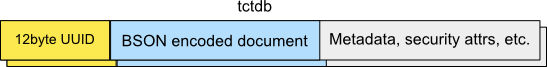
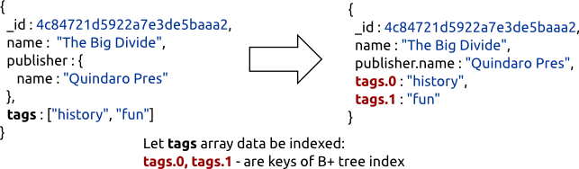

EJDB Internals¶
Tokyo Cabinet¶
Storage system of EJDB is built on the low-level structures provided by Tokyo Cabinet library such as:
Document storage model¶
Every EJDB collection is a table database (tctdb) stored in separate file which is schema-free table storage. Collection data records stored in rows are splitted into set of user defined columns. It’s shown in the following table:
- Every JSON document is encoded to the BSON data format and stored as a part of tctdb data record.
- Using tctdb gains the ability to easily associate metadata as and extra tctdb columns adjusted with document record.
It gives us the following benefits:
- Security attributes can be easily attached to documents, so the row level ACL may be implemented.
- Document access stats can be stored in metadata for further query/index optimizations.
Note
Record-level security/document stats are not yet implemented in the current 1.2.12 release.
Indexing¶
In order to speed up execution of some queries, a values pointed by some document fields have to be indexed. In our implementation every defined indexed field is backed by B+ tree database. Field values are stored in the B+ tree tcbdb and point to the primary keys (ObjectId) of BSON documents they refer to. There are four types of field indexes which are supported:
- String index for matching string values. This is B+ tree, where a comparison function sorts indexed values in lexicographic order.
- String index for case insensitive string matching. This is implemented as the previous case with the following feature: all indexed values are normalized to lower case in order to provide efficient case insensitive string matching.
- Index for numeric types. A comparison function treats indexed values as numbers.
- Inverted index for matching values in JSON arrays or in string values treated as a set of space delimited tokens. Indexes of this type are used for effective matching in an array as well as for $strand and $stror operations.
Let us consider the index structure of sample collection of documents named Books. In the collection publisher names and book’s tags are indexed fields.
id, name, publisher.name, tags.0, tags.1 each of them is a fieldpath
Special JSON document’s _id key is a primary key of every record in the tctdb underlying hash database.
Note
EJDB cannot traverse _ids of documents in lexicographic order and restricts _id field data type to be only 12-byte ObjectId
Index for every indexed fieldpath stored in separate B+ tree file managed by tcbdb.
Only one index is used during query execution. Major index selection among possible candidates is based on the number of empirical rules. Collections access/selectivity stats are not taken into account in the current EJDB 1.2.12 release. EJDB supports token matching inverted indexes backed by B+ tree. Arrays, $stror, $strand matching.
The following factors are taken into account when choosing an query index:
- The index for a query is selected among all indexes but only for fields presented in a query.
- If a query specifies sorting rules the index of the first sorted field will be most likely used. In this case, using of fast inorder traversal of B+ tree for sorted field will speed up query execution.
EJDB supports a special type of case-insensitive string indexes used by $icase matching operation where all indexed values normalized by utf8proc library.
Particular fieldpath values can contain data of arbitrary types (token array, numeric, string), so one fieldpath may be associated with number of different B+ indexes for each type.
db.ensureStringIndex('persons', 'login');
//case-insensitive index
db.ensureIStringIndex('persons', 'login');
db.ensureNumberIndex('persons', 'login');
//B+ tree index for numbers is used
db.find('persons', {'login', 1223});
//B+ tree index for strings is used
db.find('persons', {'login', 'andy'});
//Case insesitive B+ tree index used
db.find('persons', {'login', {$icase : 'AnDy'}});
Locking¶
EJDB uses pthreads and winpthreads libs to accomplish read-write API access locking. EJDB can be used by threads within a single process only. EJDB 1.2.12 is not allowed for using by different OS processes.
Data-locking routines in tchdb are quite optimal but intricate. We have done some work on the reorganization of tchdb locks and got rid of reentrant/recursive mutexes.
Transactions¶
EJDB provides atomic and durable non parallel and read-uncommited collection level transactions, i.e., There is only one transaction for collection is active for a single point in a time. The data written in a transaction is visible for other non transactional readers. EJDB transaction system utilizes write ahead logging to provide consistent transaction rollbacks.
Implementation of parallel, read-commited ACID transactions requires a further development.